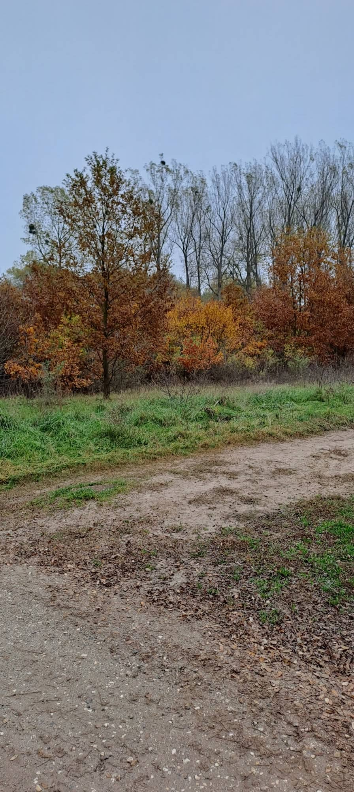
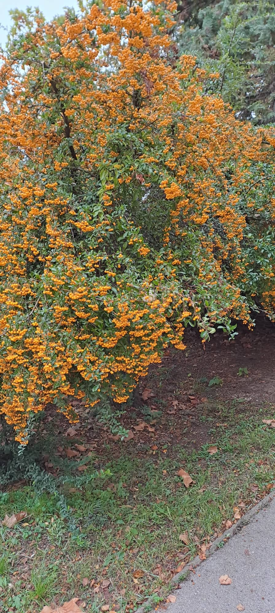
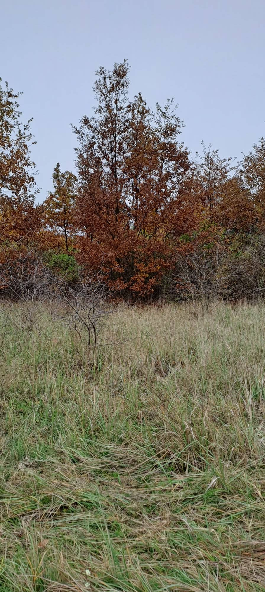
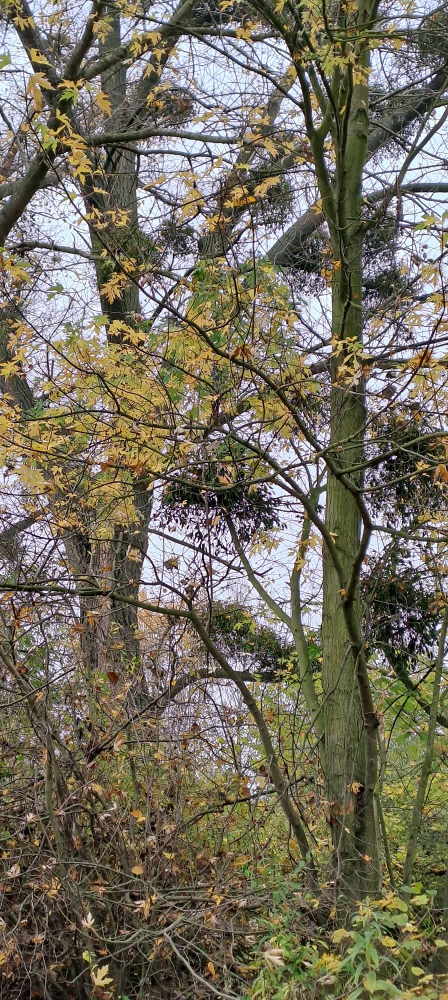
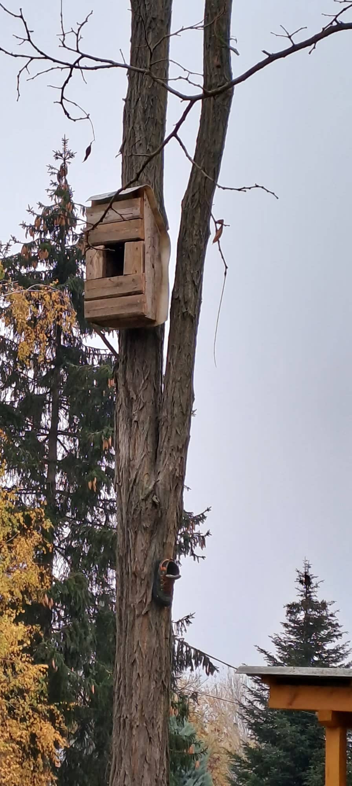
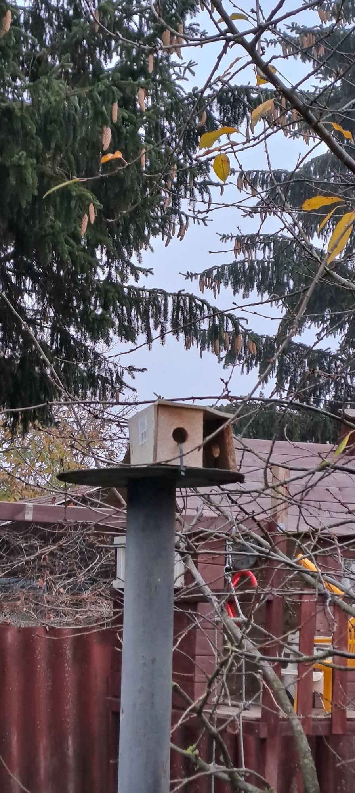

Az ősz a mérsékelt öv egyik évszaka. Trópusi, illetve száraz és hideg égövi tájakon nem létezik. A Föld északi féltekéjén szeptember, október és november, míg a Föld déli féltekéjén március, április és május az ősz hónapjai. Az ősz a nyár és a tél között helyezkedik el, fő jellemzője a napok rövidülése, a hőmérséklet csökkenése és a lombhullató fák lombjának zöldről sárgává-pirossá színeződése majd lehullása. Hagyományosan a legtöbb országban ősszel nyitnak az iskolák, indul a tanítás. Ősz a termények betakarításának, a szőlő szüretelésének ideje is Az ősz fő ünnepei az elmúláshoz kapcsolódnak: november 1. előestéje az angolszász országokban Halloween, november 1. Mindenszentek és november 2. Halottak napja.
Mókus: az emlősök (Mammalia) osztályának rágcsálók (Rodentia) rendjébe, ezen belül a mókusfélék (Sciuridae)
családjába tartozó faj. Egyéb nevei: vörös mókus vagy közönséges erdeimókus; de a népi nyelvben nevezik cibókának,
evetnek vagy kelempájsz madárnak is.
Szarvas: A szarvas a párosujjú patások közé tartozó emlősállat. A szarvasok legtöbb faja az őzekkel együtt a
szarvasfélék családjába tartozik. Egyes nyelveken egyazon szó jelöli a szarvast és az őzet is. (Például az angol
deer szó a jelzőjétől függően – red deer, roe deer – jelenthet szarvast vagy őzet.)
Gomba: A gombák (Fungi) eukarióta sejtekből álló, egy- vagy többsejtű, általában telepes felépítésű, fotoszintetizáló pigmenteket nem tartalmazó, kitintartalmú sejtfallal rendelkező élőlények, melyek az élővilág egy önálló országát alkotják, mert a gombák a növényekkel ellentétben de az állatokhoz hasonlóan heterotrófok, azaz szénszükségletüket szerves anyagokból, energiaszükségletüket pedig kémiai anyagokból fedezik. A gombák többnyire a szárazföldi körülményekhez alkalmazkodtak. Táplálkozásuk szerint vagy szaprofiták (azaz korhadékokat, az elpusztult élőlények maradványait fogyasztják), vagy mikorrhizásak (gyökérkolonizálóak, azaz a gyökerén keresztül szimbiózisban élnek egy gazdanövénnyel), vagy pedig az élő gazdaszervezetet lebontandó szerves anyagként hasznosító paraziták. Szaporodásuk rendszerint a széllel szállítódó spórákkal történik. Jelenleg kb. 148 000 fajukat ismerjük, de becslések szerint akár 2,2-3,8 millió eddig ismeretlen gombafaj is létezhet.
Októberi varjúháj: Az októberi varjúháj vagy októberke (Sedum sieboldii) alacsony termetű, terülő növekedésű évelő növény, amely kerek, húsos leveleivel, valamint csillag alakú rózsaszín virágaival díszít. A nedvesség megtartására specializálódott szürkészöld levelek, ősszel elszíneződnek. A kecses virágok, szeptember vége felé, és októberben nyílnak. Az októberi varjúháj külleme, és növekedése miatt, elsősorban kőedényekbe ültetve, valamint sziklakertekben mutat igazán jól. Az októberi varjúháj egyszerűen nevelhető, igénytelen, jó szárazságtűrő növény.
Ezek a képek Tatabányán készültek:
   Madáretető:
 